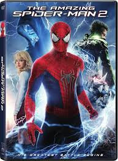
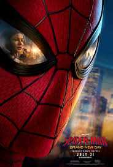

2002
Spider-Man
Tobey Maguire hangs above the city in Sam Raimi’s origin — the poster that taught a generation to look up.
See credits
On the big screen
From Raimi’s first swing to the animated multiverse — four eras, one neighborhood hero.
Flexbox film cards
Four equal-height Explore more — poster, title, text, and a button on each. Gap and hover lift included.
Tobey Maguire hangs above the city in Sam Raimi’s origin — the poster that taught a generation to look up.
See credits
Andrew Garfield between Gwen and Electro. Marc Webb’s sequel turns the suit electric blue and the fight personal.
See credits
Tom Holland’s mask fills the frame. A new day in the MCU — same Queens kid, a heavier city behind the lenses.
Watch order
Miles Morales painted into a crowd of Spider-people. Shameik Moore’s Brooklyn hero has to choose his own path.
Pick a favoriteData
Title, year, lead, and director — one table, three generations of the suit.
| Movie Title | Release Year | Lead Actor | Director |
|---|---|---|---|
| Spider-Man | 2002 | Tobey Maguire | Sam Raimi |
| The Amazing Spider-Man 2 | 2014 | Andrew Garfield | Marc Webb |
| Spider-Man: Brand New Day | 2026 | Tom Holland | Destin Daniel Cretton |
| Spider-Man: Across the Spider-Verse | 2023 | Shameik Moore (voice) | Joaquim Dos Santos |
How to watch
You do not need every sequel on night one. Start with an origin, then jump universes.

Every version still swings through New York. Tell us which Spider-Man you grew up with.